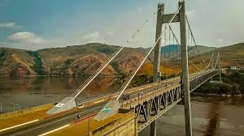

About Me
I am William Pelo Kibwila from Kinshasa, Congo democratic republic of, I am a student at BYU-Idaho studying Web Development. I enjoy creating interactive and dynamic websites and applications, this is way I am taking this course. These skills will help me in my future career. In my free time, I enjoy reading books about business and technology, as well as exploring new places and cultures. I am also passionate about learning new programming languages and frameworks to enhance my skills set.
Congo-Kinshasa, Matadi Bridge
The Congo-Matadi Bridge is a vital infrastructure project aimed at improving transportation and trade in the region. It connects the city of Matadi to the capital, Kinshasa, and is expected to significantly reduce travel time and costs. Also, it will enhance economic opportunity in the area, also the touristic place. Matadi bridge is a key project for the development of the region. It allows for better connectivity and access to resources.